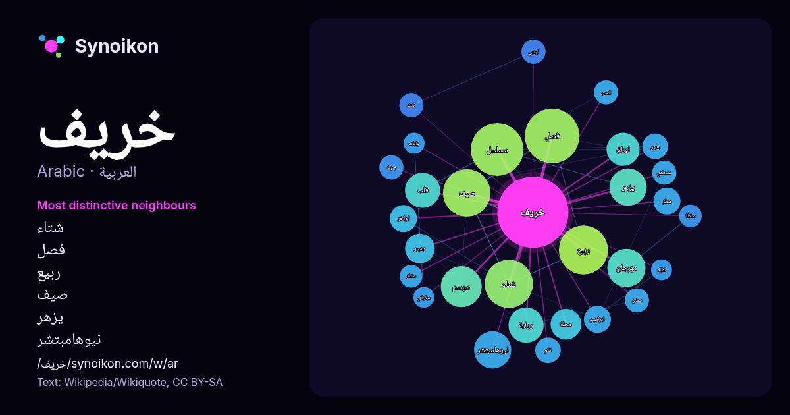

العربية · قائمة كلمات اليوم
خريف
“autumn” · الكلمات الموجودة حولها في 656 ورودًا من ويكيبيديا, Wikiquote.

الجيران الأكثر تميّزًا
- شتاء 27×
- فصل 27×
- ربيع 27×
- صيف 24×
- يزهر 20×
- نيوهامبتشر 20×
- مسلسل 19×
- مهرجان 15×
- بشير 12×
- اوراق 12×
- محلة 11×
- قلب 11×
- مطر 10×
- رواية 9.4×
- ليتني 9.0×
- سمان 8.9×
- موسم 8.6×
- بدور 8.6×
- فلم 8.3×
- كنت 7.9×
× = كم مرة أكثر مما في نصوص ويكيبيديا العامة.
الجيران الأكثر تكرارًا
- فصل 41
- مسلسل 38
- ربيع 33
- شتاء 32
- صيف 31
- فيلم 24
- موسم 23
- مهرجان 20
- نيوهامبتشر 19
- يزهر 19
- رواية 17
- قلب 17
- عمر 16
- اوراق 15
- محلة 13
- بشير 12
- تابعة 12
- محمد 12
- متحدة 11
- ابراهيم 10
في السياق
- الخريف فصل من فصول السنة الأربعة في المناطق المعتدلة وهو يتبع الصيف ويليه الشتاء. توجد عدة تعاريف لفصل الخريف، منها ما هو فلكي (بداية الاعتدال الخريفي)، Wikipedia snippets · خريف
- خريف القلب، مسلسل تلفزيوني سعودي مُقتبس من المسلسل الكوري "الخريف في قلبي". إخراج سيردال بينما النص من تأليف علاء حمزة. من بطولة إبراهيم الحربي وعبد المحسن Wikipedia snippets · خريف القلب (مسلسل)
- المجال الفني عام 2018 في مسلسل شباب البومب 7 لكن عرفها الجمهور في مسلسل خريف القلب بدور شوق. ولدت لأب لبناني وأم سورية وبحكم أقامتها في السعودية اتقنت Wikipedia snippets · ميرال مصطفى
- بندر بن إبراهيم بن عبد الله الخريف، وزير دولة وعضوًا مجلس الوزراء السعودي، ومحافظ الهيئة العامة للصناعات العسكرية، شغل منصب وزير الصناعة والثروة المعدنية Wikipedia snippets · بندر الخريف
- خريف عمر مسلسل سوري يدور قصة العمل حول المحامي المتقاعد "عمر" الذي يتحول إلى قاتل متسلسل انتقاماً لشقيقته التي قتلت بجريمة بشعة، وبعد أن تتعرض ابنته للعنف Wikipedia snippets · خريف عمر (مسلسل)
- «فرقيطة الخريف» هي فئة فرقيطة من ثلاث فرقيطات تُديرها البحرية السلطانيةالعمانية. تم بناء السفن بواسطة شركة BAE Systems في حوض بناء السفن الخاص بها في بورتسموث Wikipedia snippets · خريف (فرقيطة)
- السمان والخريف رواية لنجيب محفوظ، تعتبر من رواياته ذات النزعة الفلسفية. موضوع الرواية هو الاغتراب والماضي والواقع المتغير من خلال شخصية «عيسى الدباغ» Wikipedia snippets · السمان والخريف
- عينات أو عيّن بكسر حرّف العين وتضعيف الياء هي منازل ومواقيت نزول المطر فصّل الخريف ومفردها عينة وهي من موروثات السودان الشعبية القديمة، التّي يتوارثها الأبناء Wikipedia snippets · عينات الخريف
كلمات أخرى
- أغنية
- إله
- تاريخ
- جبل
- جرس
- جزيرة
- جسر
- حديقة
- حصان
- حقيقة
- حياة
- خبز
- خريطة
- ذهب
- زمن
- ساعة
- شاي
- شتاء
- صحة
- صحراء
- صمت
- صيف
- طبيعة
- طريق
- طعام
- ظل
- عائلة
- عاصفة
- عسل
- علم
- عمل
- غابة
- فن
- قطار
- قطة
- قلب
- قوة
- كلب
- لغة
- ماء
- مال
- مدينة
- مرآة
- مطر
- ملح
- مناخ
- موت
- نجم
- والدة
حُسبت مسبقًا في 2026-10-09 بالإعدادات الافتراضية (±5 كلمات، مدوّنة متوسطة). يمكن للخريطة التفاعلية تحديثها ببيانات حية.
واجهة مترجمة آليًا؛ نرحب بالتصحيحات.